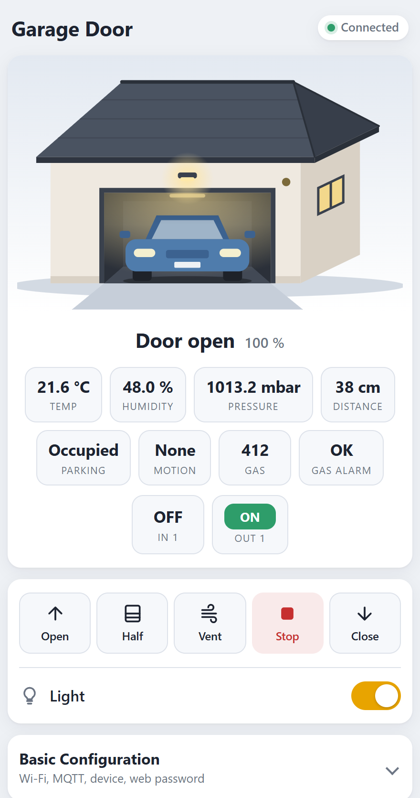

HCPBridge Documentation
HCPBridge Documentation
Web interface
Everything the bridge can do is available in the browser at http://<device-ip>/ – on the phone as well as on the desktop, in light and dark mode.

Access
- In your network:
http://<device-ip>/ - Via the hotspot
HCPBRIDGE: http://192.168.4.1 - No login by default. If a Web password is set in the basic configuration, the browser asks for user
adminand that password (HTTP basic authentication, applies to the page and the API).
Status area
Garage animation
The garage illustration mirrors the real door:
| Element | Shows | Source |
|---|---|---|
| Sectional door | Slides up into the garage exactly as far as the door is open (0–100 %). While the door moves, the animation glides smoothly between the status updates. | currentPosition |
| Amber light next to the door | Blinks while the door is opening or closing. | doorstate |
| Ceiling lamp, outdoor lamp, side window | Glow warm when the operator light is on. | light |
| Car inside the garage | Visible when the HC-SR04 parking sensor reports the space as occupied; hidden when it is free, when the sensor is not enabled or has failed. The car is behind the door, so you see it as the door opens. | sensor free = "false" |
| Greyed-out scene | No valid communication with the operator (bus not connected, no bus scan yet). | valid |
free and means parking space available: "true" = free (no car), "false" = occupied (car shown). In the sensor tiles it is displayed as Free / Occupied. How the sensor decides is explained under Sensors.Status line and connection badge
Below the garage the door state and position are shown (Door open, Door closing, Door partially open, Door venting …). The badge at the top right shows:
| Badge | Meaning |
|---|---|
| Connected | The bridge receives data from the operator. |
| No bus | The web server answers, but there is no valid bus communication. Check the cable and run the bus scan. |
| Offline | The browser cannot reach the bridge. |
The page polls /status every 3 seconds. Sensor changes and digital I/O changes are additionally pushed instantly via server-sent events (/events).
Sensor and I/O tiles
Every enabled sensor gets a tile (temperature, humidity, pressure, distance, parking, motion, gas, gas alarm). A sensor that failed is shown with its last value in red. Enabled digital channels appear in a second row: inputs show ON/OFF, outputs are buttons that toggle the output.
Door controls
| Button | Action | HTTP |
|---|---|---|
| Open | Open completely | /command?action=1 |
| Half | Drive to the half-open position | /command?action=4 |
| Vent | Drive to the ventilation position | /command?action=3 |
| Stop | Stop a moving door | /command?action=2 |
| Close | Close completely | /command?action=0 |
| Light switch | Toggle the operator light | /command?action=5 |
Commands are ignored while there is no bus connection. Half and vent positions are the positions programmed in the operator.
Configuration forms
The configuration is split into four collapsible forms. Each has its own Save & Restart button and only saves its own fields. After saving the bridge restarts – if the operator then shows an error, run the bus scan again.
| Form | Contains |
|---|---|
| Basic Configuration | Wi-Fi, access point, MQTT, device ID and name, serial debug, web password |
| Sensor Configuration | Which sensors are used, their GPIOs, polling interval and publish thresholds |
| I/O Configuration | In1/In2 and Out1/Out2: enable, name, GPIO, pull mode, inversion, local action, restore |
| Expert Configuration | RS485 GPIOs and the names of the Home Assistant entities |
Every field is described in the configuration reference. Password fields show * when a password is stored; leave the * to keep it.
System information
Shows firmware version, build environment, hostname, IP address, Wi-Fi state and signal strength, MQTT connection, free memory, the reason of the last restart, and the state of every sensor and digital channel (Active, Disabled = failed, Off). While the panel is open it refreshes every 5 seconds, so you can use it to align the antenna.
| Signal | Rating |
|---|---|
| −67 dBm or better | good |
| −68 … −80 dBm | fair – usable |
| below −80 dBm | weak – expect drop-outs |
The panel also links to OTA Update (/update, user admin / password admin) and Factory Reset (/reset, asks for confirmation, erases all settings and restarts).